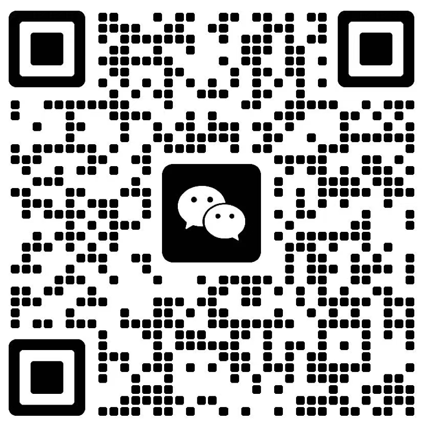

精选作品

上岸了，这些捕鱼人成了养鱼人
点击封面查看报道 · #人文
幸福生活“一键直达”
点击封面查看报道 · #民生
本科毕业于荆楚理工学院广播电视编导（GPA 3.77/4.00）。2019–2023 于南昌广播电视台任多媒体记者/新媒体编辑，负责选题策划、采访撰稿、拍摄剪辑及全平台运营，年浏览量超1亿；曾联合央视与“学习强国”策划大型直播，单场观看量破百万。
研究兴趣聚焦：新媒体传播、社交媒体与新闻融合、网络/算法议程设置（NAS/AAS）、情绪传播与用户行为。
1433890263@qq.com
wangzeheng202311@163.com
wzh1025@khu.ac.kr
